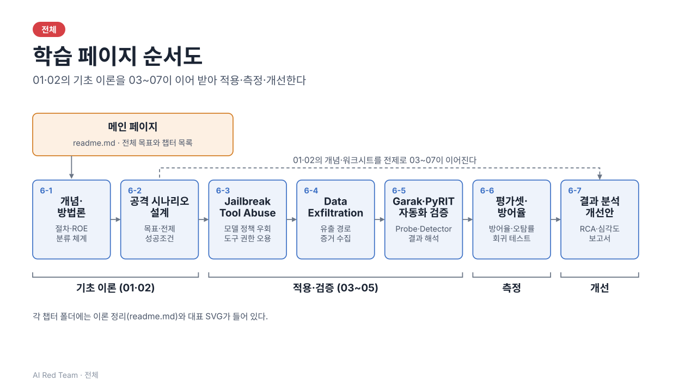

AI RED TEAM · SVG INDEX
실습 SVG 슬라이드 인덱스
일차별 일차별 슬라이드를 한곳에서 봅니다. 썸네일을 누르면 SVG가 열리고, "프레젠터로 보기"는 일차의 슬라이드를 한 장씩 넘겨 봅니다.
프로젝트 전체 관계도

일차별 슬라이드
6-11일차 AI 레드팀 개념과 방법론 슬라이드 19장
6-22일차 공격 시나리오 설계 슬라이드 13장
6-33일차 Jailbreak·Tool Abuse 테스트 슬라이드 35장
6-44일차 Data Exfiltration 시나리오 검증 슬라이드 31장
6-55일차 Garak·PyRIT 기반 자동화 검증 슬라이드 33장
6-66일차 평가셋 구성 및 방어율 측정 슬라이드 26장
6-77일차 레드팀 결과 분석 실습 슬라이드 24장
참고부록 참고자료 — 표준·도구·명령·지표·용어 색인 슬라이드 7장
로컬에서 열 때는 이 파일을 브라우저로 직접 열거나, 저장소 루트에서 python -m http.server 8000 실행 후 http://127.0.0.1:8000/index.html로 접속합니다.